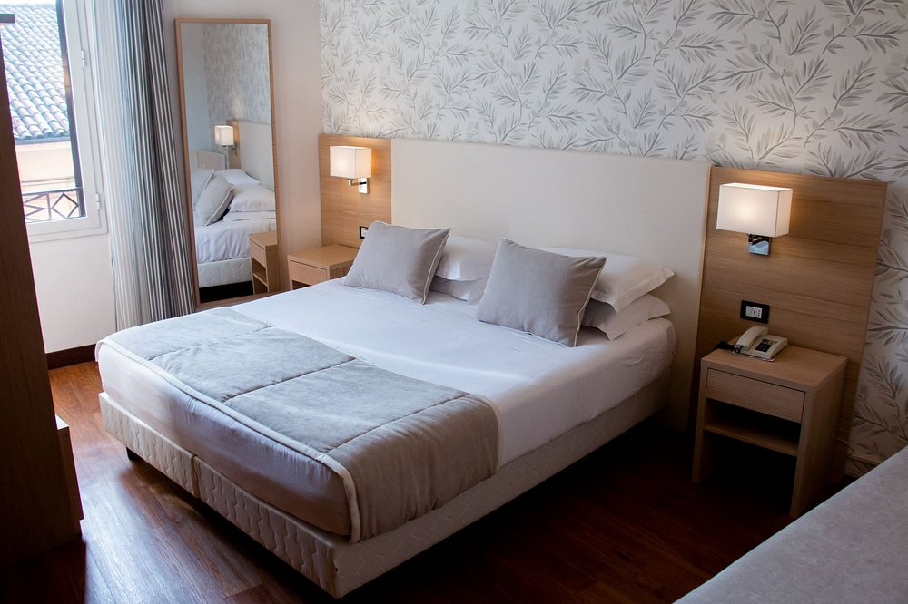
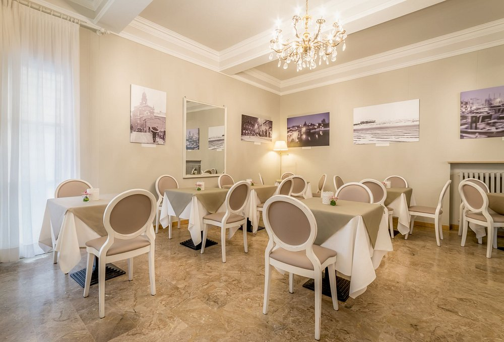
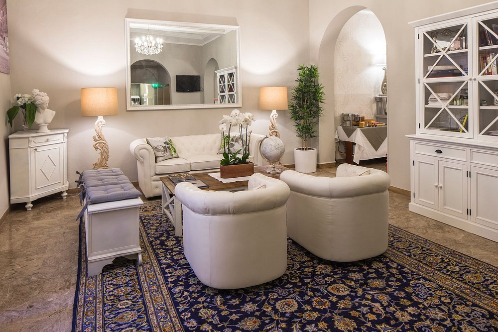
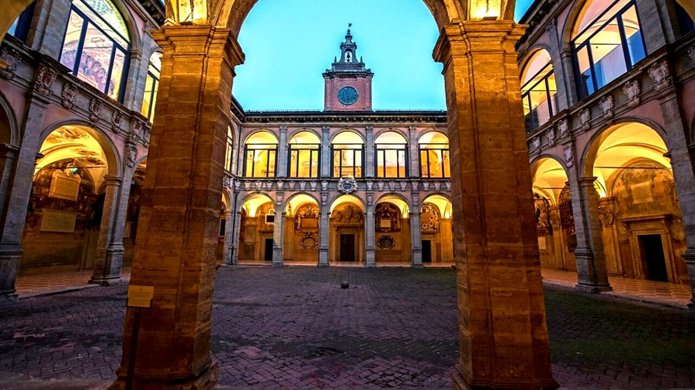
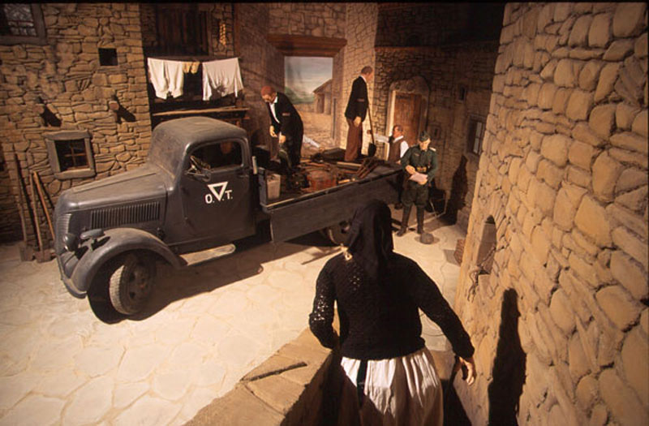
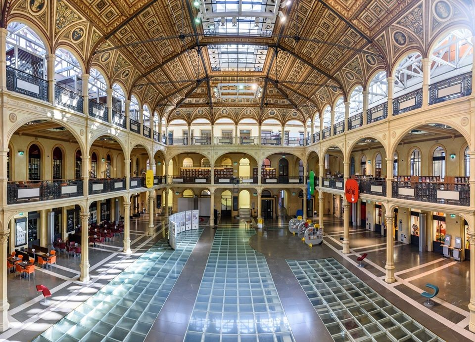

Il nostro lavoro
Scopri il nostro itinerario di Bologna, suddiviso in tre giorni ricchi di storia, cultura e arte.
Il viaggio in pillole
Bologna è una città che sa conquistare: la ricca tradizione enogastronomica e un patrimonio storico-culturale unico, offre un'esperienza di viaggio completa e indimenticabile. Questo itinerario di 3 giorni è progettato per farvi scoprire la città, offrendo al turista anche momenti di relax, attraverso tre temi principali: il turismo letterario legato a Giovanni Pascoli, il turismo della memoria attraverso luoghi simbolici legati alla Seconda Guerra Mondiale, e l'Art Nouveau, che si nasconde tra i palazzi e le vie del centro.
L'Hotel
Per quanto riguarda l'alloggio, abbiamo selezionato l'Hotel Accademia (tre stelle): quest'ultimo è vicino alle attrazioni da visitare, include la colazione ed è situato nel centro storico di Bologna.



Giorno 1 - Alla Scoperta dell'Università bolognese
Oggi ci immergiamo nella storia dell'Università di Bologna, la più antica del mondo occidentale, e nel suo legame con Giovanni Pascoli, uno dei più grandi poeti italiani.
Mattina
Iniziamo con una visita guidata all'Università di Bologna, esplorando i suoi cortili storici, l'Archiginnasio e l'Aula Magna. Scopriremo come Pascoli insegnò qui e come l'ateneo ha influenzato la sua poesia.
Tappa speciale: Una sosta nel cortile di Palazzo Poggi, dove Pascoli trascorse parte della sua vita accademica.
Pausa pranzo libera
Si consiglia di pranzare in una tra le numerose trattorie e osterie del centro per assaporare la cucina bolognese.
📌 Suggerimento: Trattoria Anna Maria, Sfoglia Rina, Osteria dell'Orsa.
Pomeriggio
Visiteremo Casa Carducci, la casa-museo del poeta Giosuè Carducci, amico e collega di Pascoli. Concludiamo con un laboratorio di scrittura poetica, ispirato alle opere di Pascoli, per immergerci nell'atmosfera creativa che ha caratterizzato la sua vita.
Laboratorio: Scriveremo una breve poesia ispirata ai temi pascoliani, come la natura, la memoria e l'infanzia.
Sera
Per concludere la giornata, avrete del tempo libero per esplorare Bologna di sera e si consiglia di cenare in un ristorante tradizionale in stile pascoliano, con ambientazione romantica e rurale.
📌 Suggerimento: Trattoria di Via Serra o Al Sangiovese.

Giorno 2 - Bologna e la Seconda Guerra Mondiale
Oggi esploriamo i luoghi che raccontano la storia di Bologna durante la Seconda Guerra Mondiale, tra Resistenza, memoria e rinascita.
Mattina
Visita al Museo Memoriale della Libertà, un luogo ricco di documenti, reperti e testimonianze della guerra. Ascolteremo storie di coraggio e sacrificio, con una guida che ci racconterà gli eventi che hanno segnato la città. Successivamente ci recheremo al Memoriale delle vittime della strage di Marzabotto, per ricordare una delle pagine più tragiche della guerra.
Pausa pranzo libera
Si consiglia un pranzo leggero in un bistrot locale, con un menù storico che ripropone piatti tipici dell'epoca, per un'esperienza culinaria che ci riporta indietro nel tempo.
📌 Suggerimento: Rosarose Bistrot, La Sberla Bistrot - entrambi offrono piatti semplici in ambienti legati alla tradizione.
Pomeriggio
Visita al Cimitero Monumentale della Certosa, un luogo di memoria e arte, dove riposano partigiani e vittime della guerra. Concludiamo con una visita al Memoriale della Stazione, dedicato alle vittime della strage del 2 agosto 1980, un momento di silenzio e riflessione.
Sera
Si consiglia una cena con vista panoramica sulla città, per ammirare la bellezza e l'eleganza della città.
📌 Suggerimento: cena con vista panoramica al Terrazza Mattuiani o Il Boccone del Prete per chi vuole godersi Bologna dall'alto.

Giorno 3 - Immersione nell'Art Nouveau
Oggi scopriamo l'eleganza dell'Art Nouveau a Bologna, tra palazzi storici, dettagli architettonici e un tocco di creatività.
Mattina
Visita alla Biblioteca Salaborsa, una biblioteca pubblica dove ammireremo gli splendidi elementi Liberty della struttura, in particolare la maestosa cupola in vetro e ferro battuto con le sue decorazioni geometriche e floreales. Partecipiamo a un workshop di decorazione Art Nouveau, dove creeremo nella Sala Conferenze il nostro segnalibro decorato con motivi ispirati a questo stile.
Pausa pranzo libera
Si consiglia un pranzo legato alla degustazione di vini locali abbinati a piatti tipici, ideale per ricaricare le energie.
📌 Suggerimento: Vicolo Colombina
Pomeriggio
Passeggiata verso la Palazzina Majani, alla scoperta degli edifici Art Nouveau nascosti tra le vie del centro. Concludiamo con una sosta in Via Farini, dove ammireremo alcuni dei più bei palazzi Liberty della città.
Sera
Cena di arrivederci al Ristorante Diana, in stile Belle Époque, per immergerci completamente nell'atmosfera Art Nouveau.

Il prezzo
Il prezzo complessivo del viaggio organizzato è di 321 euro a persona e comprende: Pernottamenti, colazione in albergo, biglietti dei musei, laboratori, visite guidate e la cena del terzo giorno.
La quota non comprende: cene e pranzi (esclusa la cena del giorno 3), trasporti, spese extra e tutto ciò che non è citato nella voce "il prezzo comprende".
Contatti
Scansiona per supportarci con una donazione

Restiamo in contatto! Seguici sui social o scrivici una email.